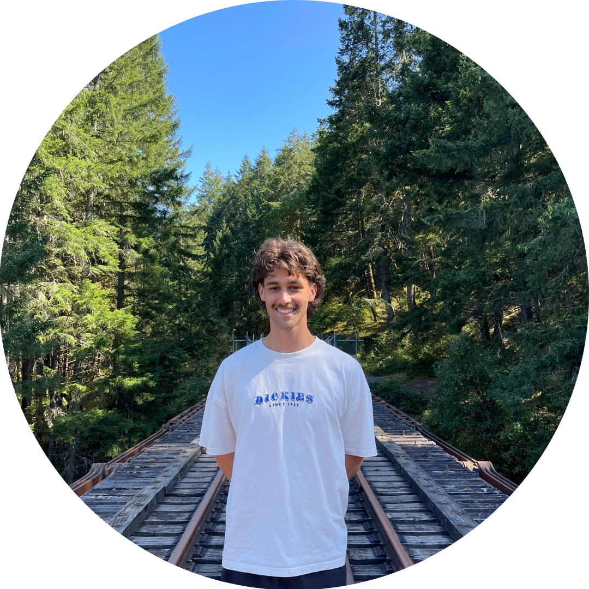
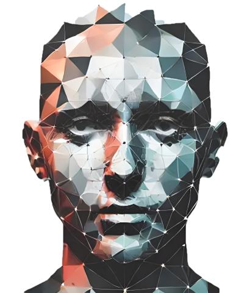

Machine Learning Engineer
Nov 2024 – Present
Swordfish Computing · Adelaide, SA
- Developing AI/ML systems for defence and agriculture.

I'm a Machine Learning Engineer working on computer vision models applied in defence and agriculture.
Previously I studied EE and CS at the University of Adelaide (now Adelaide University).
My research interests are in world models, causal representation learning, and self-supervised learning. I want to develop intelligence that learns the causal mechanisms of an environment and apply this toward scientific discovery.


Running, football and surfing.